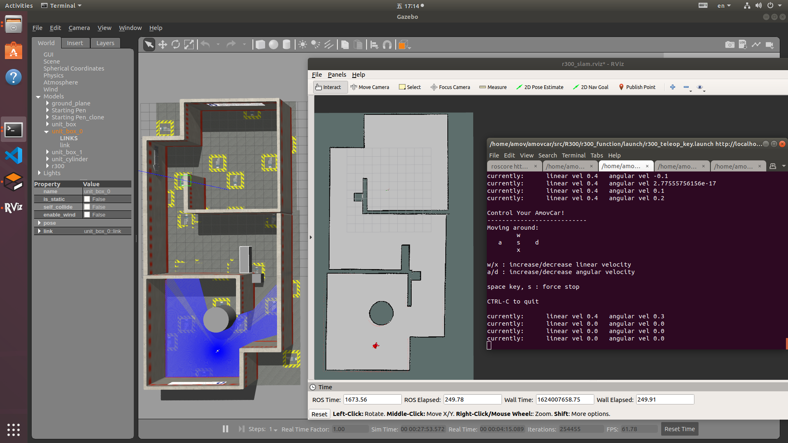
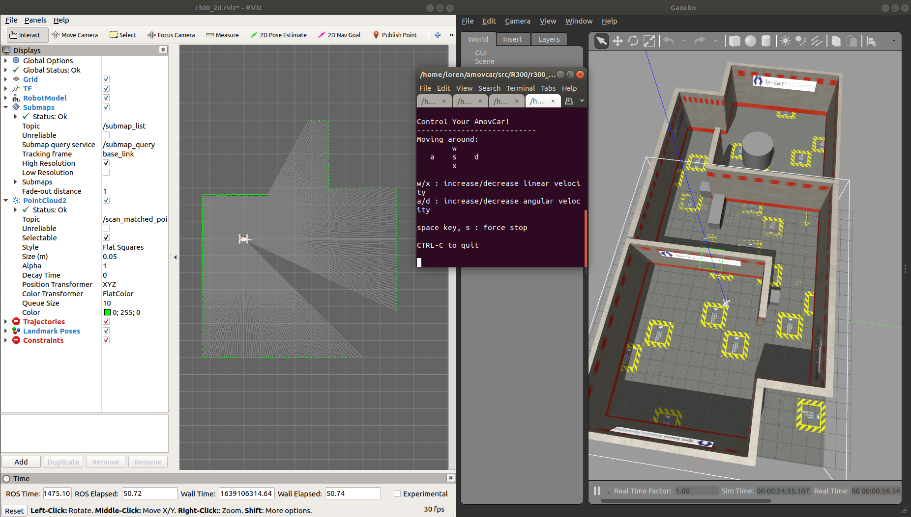
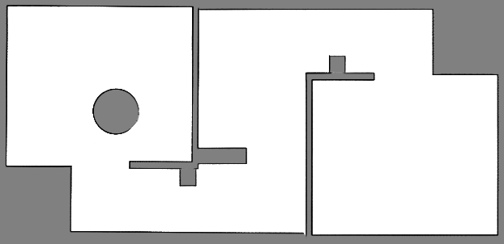
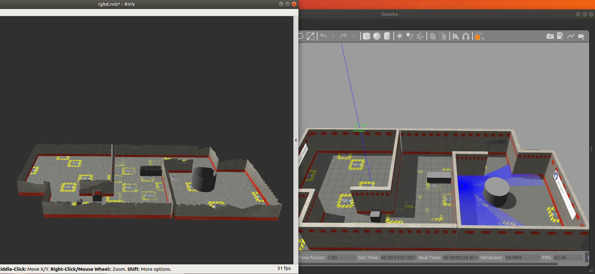
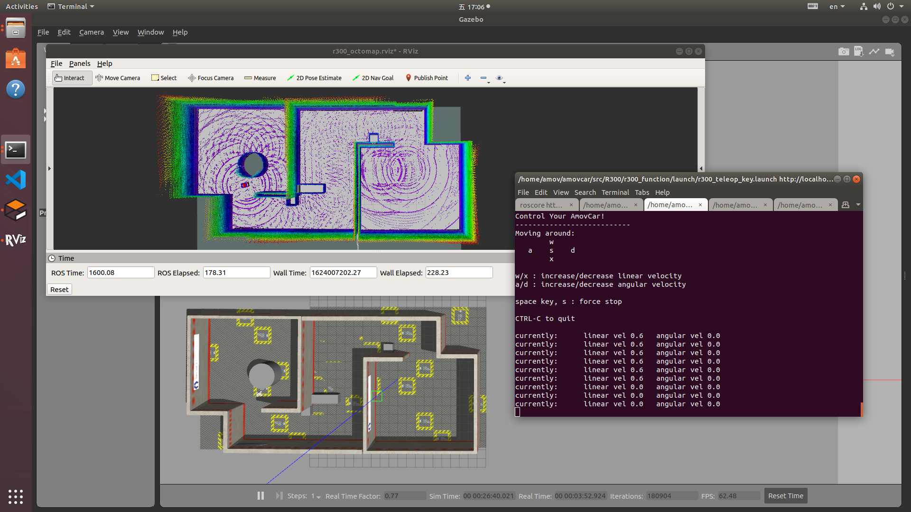

仿真
仿真系统介绍
R300仿真系统基于ROS以及Gazebo仿真系统搭建，提供无人车车体模型，并提供二维激光雷达、三维激光雷达以及深度相机等传感器仿真， 目前配备有navigation导航功能，RtabMap三维建图功能，OctoMap三维建图功能，SLAM建图功能的仿真。
注解
R300仿真对CPU配置有一定的要求，较早的CPU例如i3、部分i5可能存在卡的情况。
不建议在R300的板载计算机上进行仿真操作
仿真环境搭建
打开终端，输入以下命令，安装仿真环境
sudo apt install ros-melodic-gmapping ros-melodic-navigation ros-melodic-amcl ros-melodic-map-server ros-melodic-move-base ros-melodic-rtabmap ros-melodic-octomap -y
SLAM
Gmapping
打开终端，输入命令
roscd r300_simulation/sh && bash r300_simulation_slam_gmapping.sh依次检查弹出的终端窗口，检查每个终端中的节点是否正常启动。
然后在第三个终端界面，通过键盘控制R300的移动，进行建图。如下图所示
建图完成以后，打开一个新的终端，输入命令
rosrun map_server map_saver -f ~/sim_map注解
-f参数后面表示地图保存的地址和文件名称，为绝对路径。上面这个指令，将地图保存在 根目录下，并且命名为map。如果您提前启动了
roscore，那么第一个终端将会报错，属正常情况。
下图为构建好的仿真地图

Cartographer
打开终端，输入命令
roscd r300_simulation/sh && bash r300_simulation_slam_cartographer.sh依次检查弹出的终端窗口，检查每个终端中的节点是否正常启动。
然后在最后一个终端界面，通过键盘控制R300的移动，进行建图。如下图所示
建图完成以后，打开一个新的终端，输入命令
roscd r300_simulation/sh && bash r300_cartographer_map_save.sh注解
该脚本将地图默认保存在 /home/amov/amovcar/src/R300/r300_simulation/maps/ 下。地图的默认名称为 sim_map
使用脚本保存地图会覆盖上一次的地图文件。如果需要多次仿真建图对比，将每次保存的地图单独放在一个文件夹中。
如果您想将地图保存在其他位置，打开脚本，修改文件路径即可。
如果您提前启动了
roscore，那么第一个终端将会报错，属正常情况。
下图为构建好的仿真地图
RtabMap三维建图
打开终端，输入命令
roscd r300_simulation/sh && bash r300_simulation_rtabmap.sh依次检查弹出的终端窗口，检查每个终端中的节点是否正常启动。
确认终端均没有报错，在第三个终端内，用键盘控制小车移动进行建图。
建图完成以后，输入命令
rtabmap-databaseViewer ~/.ros/rtabmap.db保存地图仿真rtabmap如下
注解
查看地图的命令为
rtabmap-databaseViewer ~/.ros/rtabmap.db输入查看地图命令后会跳出一个对话框，点击菜单栏上的 view—occupancy grid 即可查看地图
地图保存的路径为 ~/.ros/rtabmap.db
OctoMap三维建图
打开终端，输入命令
roscd r300_simulation/sh && bash r300_simulation_octomap.sh依次检查弹出的终端窗口，检查每个终端中的节点是否正常启动。
确认终端均没有报错，在第三个终端内，用键盘控制小车移动进行建图。如下图所示：
建图完成以后，输入命令
rosrun octomap_server octomap_saver -f ~/map_name.ot保存地图注解
-f参数后面表示地图保存的地址和文件名称，为绝对路径。上面这个指令，将地图保存在根目录下，并且命名为map_name.ot。生成地图文件会耗费一定时间，示例中地图文件生成耗费时间大概在5秒左右
输入命令
octovis map_name.ot查看三维地图。注解
需在保存地图的文件夹路径下输入命令
查看oct地图需要安装相关功能包
sudo apt install octovis
仿真Octomap地图如下: